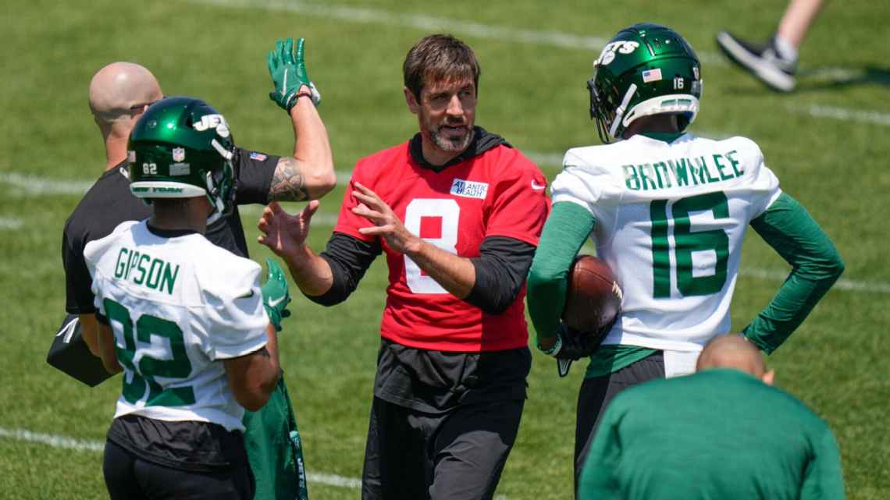

Rodger tornar os Jets favortios na conferência

Rodgers ainda não entrou em campo pelo Jets, que o adquiriu há 44 dias do Green Bay Packers, mas ele já mudou a forma como eles jogam futebol. Ao mesmo tempo, essa é uma das principais razões pelas quais Rodgers decidiu continuar sua carreira com os Jets. Com Hackett - um amigo próximo e confidente - comandando o ataque, ele sabia que teria uma grande influência na implementação e direção do ataque, o que ele vê como uma mudança refrescante em relação a Green Bay. Rodgers ficou incomodado em alguns momentos com o técnico dos Packers, Matt LaFleur, expressando sua frustração publicamente ocasionalmente. Rodgers, que uma vez disse que o sistema de LaFleur "tem falhas", desabafou na temporada passada após uma derrota para o Jets, afirmando que o ataque precisava ser simplificado. Não foi a primeira vez que ele expressou seus sentimentos. Não há dúvida de que Rodgers era vocal nas reuniões em Green Bay - ele mesmo disse isso - mas há uma diferença entre falar e ser ouvido. Embora ainda seja a fase da lua de mel, parece que suas palavras têm mais peso em Nova York. Pode-se dizer que ele é dono do ataque, que foi projetado com ele em mente. Em suma, é o show dele.